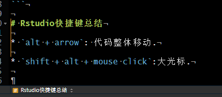

.rs.restartR()alt + arrow: 代码整体移动.
shift + alt + mouse click:大光标.

使用get()函数.比如:
a <- 1:10
b <- "a"
b## [1] "a"get(b)## [1] 1 2 3 4 5 6 7 8 9 10使用assign()函数.
b <- "a"
assign(x = b, value = 1:10)
a## [1] 1 2 3 4 5 6 7 8 9 10b## [1] "a"这个函数非常有用,尤其是在一个循环中,你想将每个循环获得的对象赋予给一些使用数字编号的变量名中.
rm(list = ls())
for(i in 1:10){
cat(i, " ")
temp <- 1:i
assign(x = paste("run", i, sep = "_"), value = temp)
}## 1 2 3 4 5 6 7 8 9 10run_1## [1] 1run_5## [1] 1 2 3 4 5run_10## [1] 1 2 3 4 5 6 7 8 9 10